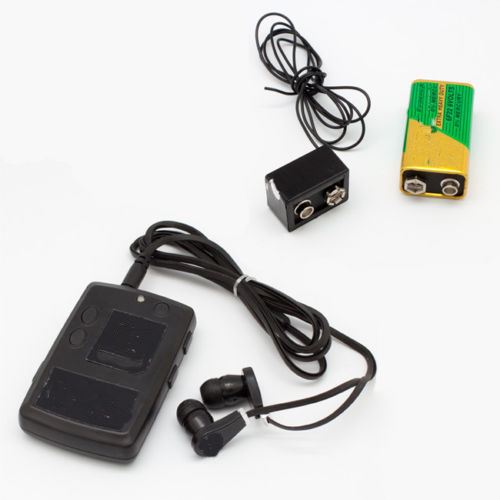
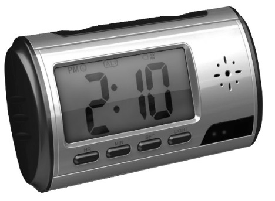

En temps réel :
Ces dispositifs émettent directement l’information et sont exploités immédiatement.
(Exemple : micro-espion audio — fig. 01)

MC - Ingénieur freelance
email: ose-be@mailfence.com
Par définition, une opération de sécurité électronique (OSE) a pour objectif de détecter, identifier et localiser tout dispositif d’écoute clandestin (DIL).
L’ingérence économique ou technique peut être utilisée par des personnes malveillantes ou des organisations concurrentes pour vous nuire ou vous surveiller à votre insu. Si des informations sensibles fuient de manière récurrente, la crédibilité de l’entreprise est remise en doute.
Des faits de voyeurisme sont également en pleine expansion (installation de caméras pinhole dans les vestiaires, douches, WC, etc.). Les images intimes ainsi captées peuvent être utilisées comme éléments de chantage ou de corruption.
Ces dispositifs peuvent être audio, vidéo ou data, et fonctionner en temps réel ou en différé.
Ces dispositifs émettent directement l’information et sont exploités immédiatement.
(Exemple : micro-espion audio — fig. 01)

(caméra dans réveil) fig. 02
